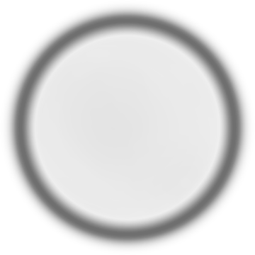
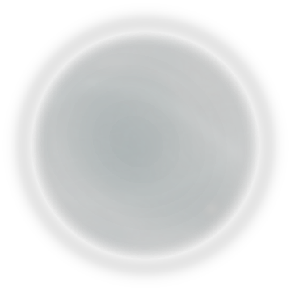
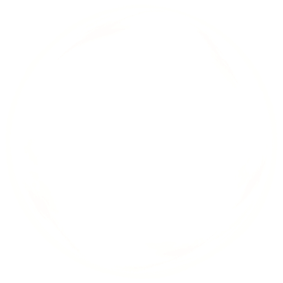
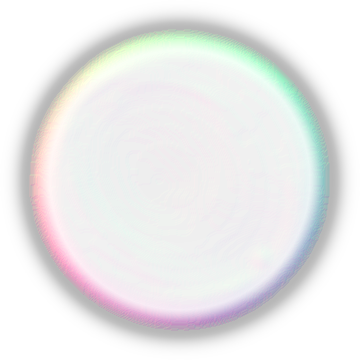
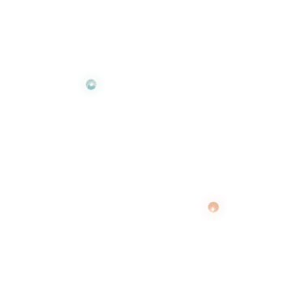
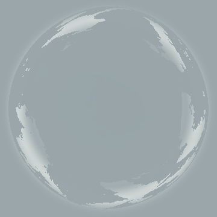

MindIsle WaterBall · K2 Source Feasibility Study
这是 M3 之后的 K2 endpoint 源层审计。它从冻结 K2 静止图层派生候选字段，只验证“现有图层能否独立重建 K2”；不接入 runtime、不修改 production，也不把候选字段当作 K2 authority。
BLOCKED · K2 source package is inconsistent
候选字段
silhouette：来自 outer film alpha。

optical depth candidate：由 cyan volume 颜色与 alpha 派生。

scatter candidate：由 flow 与 ink 层合成。

reflection candidate：由 curvature highlight 派生。

refraction：由 optical depth 梯度派生，不是原始 K2 field。

core mask：保留 07–10 point/core/glow 的位置证据。
固定视角重建

候选字段重建；当前读感明显扁平，不能作为 K2 endpoint。
证据
cycle = 5
reconstruction_mean_abs_rgb_255 = 39.8968
reconstruction_p95_abs_rgb_255 = 72.7552
layer_native_mean_abs_rgb_255 = 15.836
source_package_full_mean_abs_rgb_255 = 3.2984
source_package_consistency = FAIL
source_layer_model = alpha_over_static_layers
independent_field_recovery = false
M3 continuous slice = human PASS
M4 core integration = BLOCKED
结论：现有图层可以拆出诊断候选，但 manifest 重合成与 static_composite 本身不一致，不能把它们当成同一个 K2 source。下一步需要先修正源包 provenance，或提供人工批准的 authored K2 field source；不能继续靠参数调节伪造 endpoint。